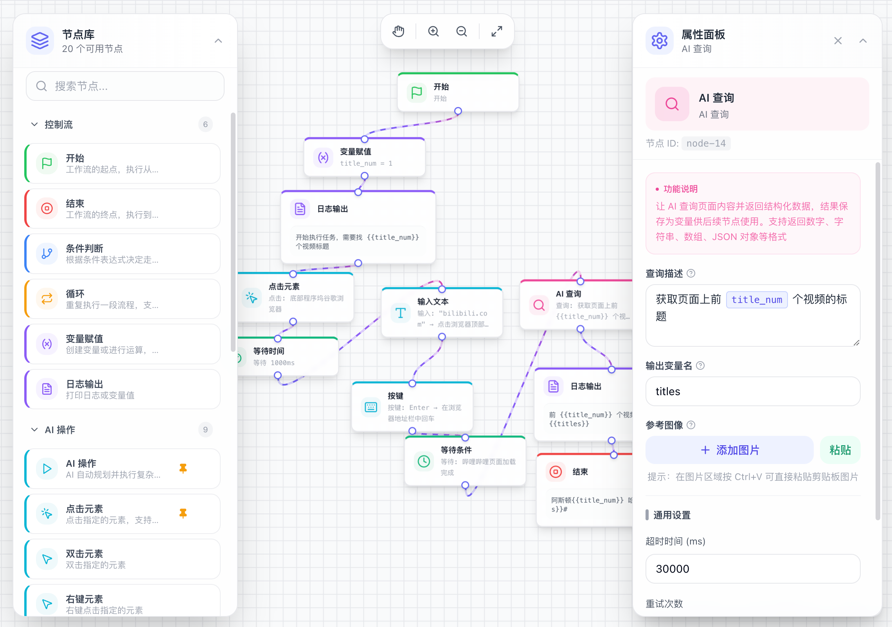

让你的电脑自己干活
可视化流程编排 × AI 驱动 × 双引擎自动化
在位置变化快、元素不明确的场景，AI 辅助判断精准操作；稳定场景下，纯本地图像匹配快速高效。

基于多模态大模型理解页面，元素位移也能精准找到，不再受坐标变化困扰。
不用 AI 也能运行。模板图 + 置信度匹配，毫秒级响应，稳定快捷又省 token。
直接控制鼠标键盘，桌面应用、游戏、网页全场景支持，一切皆可自动化。
就像搭积木一样构建自动化流程，连线完成后点击运行保存即可。
工作流入口
等待按钮图片出现
点击匹配位置
输入用户名密码
流程结束
依托 Midscene AI-act，单节点即可任务描述 → 自主规划 → 步骤执行，不需要其他节点，一步到位。
只要用自然语言说清楚要做什么，AI 自动拆解为多个操作步骤并逐一完成。
页面变化、元素重排都不怕，AI 会根据实时页面重新规划下一步，不会卡死。
原本需要 10 个节点的复杂操作，一个 AI 节点搞定，画布更简洁。
温馨提示： AI-act 会消耗一定 token，适合复杂多变的场景；简单稳定操作推荐用本地节点（图像匹配/键鼠）。
智能切换、协同作战，一套流程同时享受 AI 的灵活和本地执行的速度。
发挥你的想象，依靠大家共同发掘更多玩法。重复操作都能交给 Mimic Flow～
定时访问网站抓取数据、监控价格变化、自动生成日报周报。24/7 不间断值守。
自动收发邮件、填写表单、处理 Excel 报表、钉钉飞书打卡。从重复工作中解放双手。
自然语言描述测试步骤，AI 自动执行验证，回归测试效率提升 10 倍以上。
图像识别 + 系统键鼠，自动完成日常任务、刷图、收集资源。释放游戏时间。
自动发布内容、评论点赞、私信回复、粉丝互动。多平台统一管理，运营高效。
串联多个系统和工具，打通数据孤岛。OA+Excel+微信+ERP 一套流程搞定。
Electron 跨平台桌面应用，本地运行，数据本地存储，隐私安全。
以下功能正在积极研发中，敬请期待。有想法也欢迎一起共建～
上传一段操作演示视频，AI 自动理解操作意图和步骤，直接生成可执行的工作流。
一边操作一边录制，软件自动记录你的点击、输入、等待行为，转化为可定时执行的工作流。
工作流失败不中断，AI 主动理解任务目标、诊断原因并介入修复，持续优化流程。
🚀 有你期待的功能？欢迎提想法 · 共同建设 Mimic Flow 的下一个里程碑
释放你的时间，去做更有创造力的事。
Mimic Flow 帮你搞定一切重复操作。